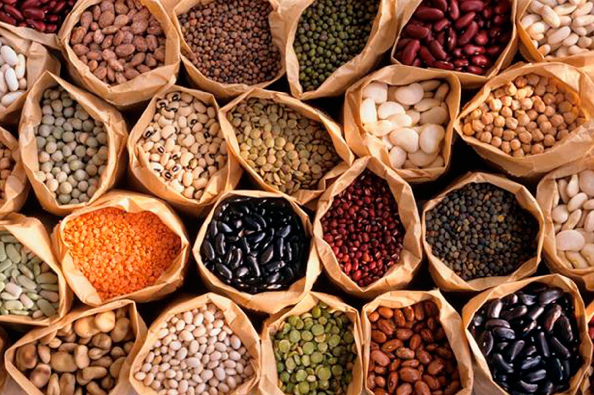
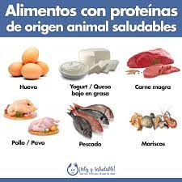

Practica 1
Alimentacion saludable
Secciones de Walmart
| Tipo de alimento |
Ejemplos |
Imagen |
| Frutas |
Fresa, manzana, pera, sandia |
 |
| Verduras |
Jitomate, papa, cebolla |
 |
| Cereales |
Arroz,maiz,trigo |
 |
| Leguminosas |
alfalfa, chícharo, fríjol, alubia |
 |
| Leche y sus derivados |
Leche, crema, yogurt |
 |
| Origen animal |
huevo, carne magra, pollo |
 |
Come sano
Una alimentación saludable nos ayuda a tener un buen estado de salud, a sanar o realizar procesos de recuperación, acombatir enfermedades e infecciones y a evitar enfermedades crónicas degenerativas causadas por la obesidad.
Si bien, todos tenemos necesidades diferentes de nutrición, lo que es igual para todos es tener hábitos de alimentación quefavorezcan nuestra salud y la de toda nuestra familia. La preparación de los alimentos debe ser higiénica, es mucho mejorpreparar los alimentos en casa y si es posible comer en compañía de la familia o amigos para poder disfrutar ese momento.La dieta debe de ser variada y suficiente. Respecto a esto, en los siguientes blogs te mostraremos cuáles son las porcionesadecuadas para comer lo que tu cuerpo necesita.
Debemos aprovechar también los alimentos regionales en donde vivimos y los de cada estación ya que eso también nosayudará a tener una alimentación variada y económica.
Otra cosa importante es incluir en las comidas principales (desayuno, comida, cena) todos los grupos de alimentos,consumiendo más verduras, debido a que nos dan satisfacción y contienen fibra, agua, vitaminas y elementos inorgánicos(minerales).
Recomendaciones de alimentación:
- Elige comer alimentos asados, guisados o a la plancha sin o con poco aceite, evita los alimentos fritos y capeados.
- Evita el exceso de azúcar, grasa y sal. Y también de harinas refinadas.
- Evita consumir productos procesados y ultra procesados ya que estos contienen muchas calorías y tiene ingredientes quepueden dañar tu salud.
https://www.gob.mx/promosalud/es/articulos/que-es-la-alimentacion-saludable?idiom=es